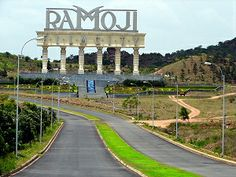
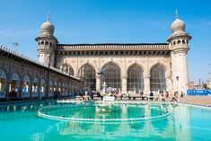
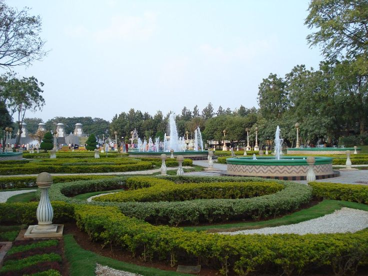

HYDRABAD

The Charminar ( lit. 'four minarets') is a monument located in
Hyderabad, Telangana, India. Constructed in 1591

Enjoy Illuminated Film City Tour, Special Entertainments with
Exciting Packages. Book Now. See Gallery

Add a description of the image here

yderabadi biryani recipe – Making a good Hyderabadi biryani is
very simple and this recipe is perfect for a home preparation.

Makkah Masjid or Mecca Masjid, is a congregational mosque in
Hyderabad, India. It is one of the largest mosques in India with a
capacity of 10,000 people.

One can visit till 9 in night as the NTR Garden timings are from
12:30 pm- 9:00 pm. The entry fee for NTR Garden is affordable to
almost everyone

Hyderabad is the capital and largest city of the Indian state of
Telangana.

Golconda (Telugu: గోల్కొండ, romanized: Gōlkōnḍa) is a historic
fortress and ruined city located in the western outskirts of
Hyderabad, Telangana, India
A craft village, Shilparamam is one of the popular tourist
attractions of Hyderabad. Spread over 50 acres